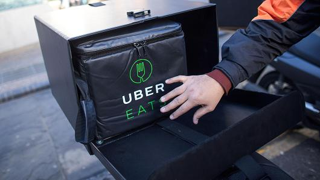
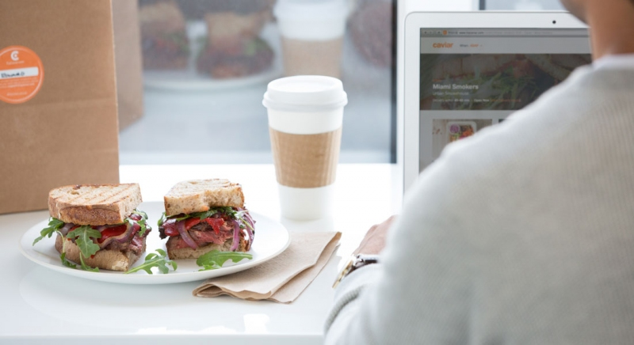
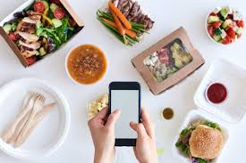
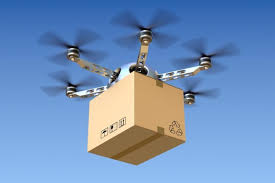
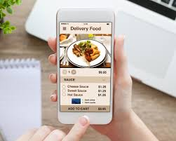
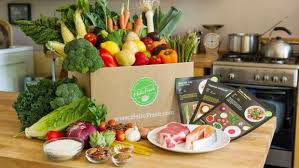
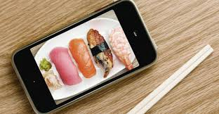
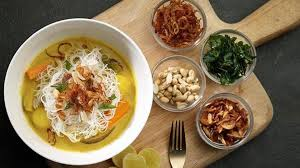
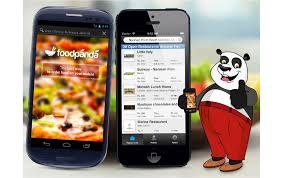

|  | How restaurants are adapting to the food delivery boomThe proliferation of delivery services like Amazon Prime, FreshDirect, and Blue Apron has made leaving the cozy confines of one's apartment increasingly unnecessary. |
|  | Getting the Real Dish on Food DeliveryDelivery has long been a component of America’s pizza parlors and Chinese food purveyors, but now—as time-strapped.... |
|  | Food delivery creates tech headache for some U.S. restaurantsOn-demand food delivery has exploded in the last few years, with more than three dozen startups getting initial funding since 2011, according to data firm CB Insights. U.S. restaurants saw $16.5 billion .... |
|  | Fears UberEATS, Deliveroo will lead to restaurant delivery food price rises in PerthThe Australian Hotels Association (AHA) has warned high commissions charged by online food delivery services can artificially push up prices for customers and make the new technology unviable.He recognised the huge reach of UberEATS, but was ... |
|  | Marks & Spencer launches online food delivery serviceThe first trial is based at its Camden store in north London and offers home delivery within one- and two-hour slots within a three-mile radius. A limited range of ready meals including |
|  | Now You Can Order Food with FacebookOrdering food for takeout or delivery is supposed to be simple. That’s the point. But somehow it’s gotten complicated. First you need to decide what to eat, then you have to sift through a bunch of options and services. |
|  | Amazon dives deeper into food delivery with a new Olo partnershipFresh off its acquisition of Whole Foods, Amazon is making moves once again to disrupt the food industry. While it may not be as good for your wallet (or your waistline) as Amazon’s recent purchase, it’ll certainly be great for your belly and hanger pangs. |
|  | Australian restaurants benefiting from delivery, IBISWorldAustralia’s restaurants are benefitting from delivery services like UberEATS and Foodora new research by IBISWorld has found. According to IBISWorld, delivery services are contributing to a 2 per cent revenue increase ... |
|  | What’s the biggest food delivery service in your city?New Yorkers and Chicagoans are most likely to get their takeout from GrubHub. Chances are DoorDash will fork over your food in San Jose and Fort Worth. In Charlotte, N.C., and Los Angeles Postmates is most likely to bring home the bacon (cheeseburger). |
Copyright© 2017 Urinov Azizbek